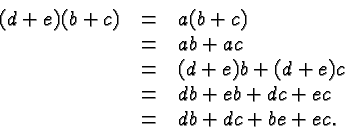
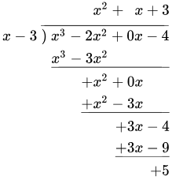
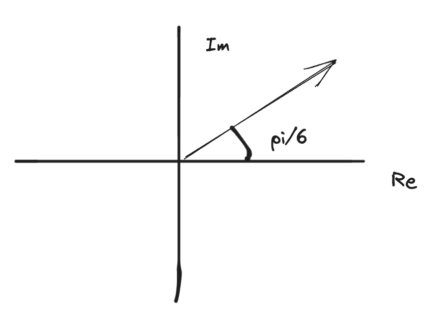

Cartesian Forms (revision)
- Not covered since this is revision.
Factorisation of Polynomials
- A polynomial function is a sum of multiples of powers of a variable.
- e.g. .
- The degree or the order of a polynomial (7 in the example) is the highest power of the variable.
- In the case , you can think of this as , such it has the 0th degree.
- If a quadratic solution has solutions and , then the LHS admits a factorisation:
- i.e. solutions correspond to linear factors of the polynomials.
- this chapter extends this idea to higher degree polynomials (instead of just 2 degree ones lol)
Polynomial Arithmetic
- Polynomials can be added or subtracted by combining like terms and simplifying.
- Polynomials can be multiplied using the distributive law
- 
- Gets a bit complicated for division. Can be divided using polynomial division.
- 
- Division with integers.
- Consider a positive integer n (e.g. 100) and a strictly smaller positive integer p (e.g. 23)
- 100 not divisible by 23, so there is remainder r when 100 is divided by 23.
- Thus we can write
- q is the quotient = number of 23s in 100 :3
- r must be smaller than divisor (23), otherwise, if it is > 23, then u did division WRONG.
- In polynomial division, the remainder isn’t always SMALLER than the divisor (like integer division). HOWEVER, the order/degree is GUARANTEED to be smaller than the divisor of the polynomial.
- When a polynomial is divided by polynomial , the degree of the remainder will be strictly smaller than the degree of .
- Thus we can write
- E.g.
- this also works for integer division e.g.
- This can be rewritten as (wth is going on) OR
- e.g. (cannot lie idk what is going on)
- implications for algebraic fractions:
- proper algebraic fraction: (numerator degree is < denominator degree) - vice versa with improper algebraic fractions
- in certain later topics (partial fractions for integration) it will be necessary to rewrite improper algebraic fractions in terms of proper ones.
- We can use polynomial division to turn an improper algebraic fraction into a proper one!
- consider \begin{align} &\frac{{x^2+3x+4}}{x+4} \text{ IMPROMPER RAGE} \\ &\implies\frac{{(x-1)(x+4)+8}}{x+4} \\ &=x-1+\frac{8}{x+4}\text{ proper yay! :D} \end{align}
- sadler algebraic juggling ??? :P
- dividing by linear (specifically) polynomials
- if and are polynomials then
- i.e. for any polynomials and , either is a factor of , or there is a polynomial multiple of that differs from by a constant.
The Remainder Theorem
For a polynomial and a number , the remainder when is divided by is
e.g.
&P(x)=2x^3+7x^2+10x+15 \\ \\
&P(x)=2x^3+7x^2+10x+15 \\
&P(-2)=2(-8)+7(4)+10(-2)+15 \\
&=7 \\ \\
&P(x)=2x^3+7x^2+10x+15 \\
&=(2x^2+3x+4)(x+2)+7
\end{align}$$
the remainder and the solution is the same!
#### Proof
$$\begin{align}
&\text{Let } r \text{ be the remainder when } P(x) \text{ is divided by } (x-\alpha) \text{. Then for some polynomial } Q(x), \\
&P(x)=Q(x)(x-\alpha)+r \\
&\text{Hence, } P(x) = Q(\alpha)(\alpha-\alpha)+r=r \text{ as required}
\end{align}$$
### The Factor Theorem
For a polynomial $P(x)$, $(x-\alpha)$ is a factor of $P(x)$ if and only if $P(\alpha)=0$
#### Proof
Suppose $x-\alpha$ is a factor of $P(x)$. Then the remainder when $P(x)$ is divided by $x-\alpha$ is 0, Hence, by the remainder theorem, $P(\alpha)=0$.
Conversely, suppose that $P(\alpha)=0$. Then the remainder when $P(x)$ is divided by $(x-\alpha)$ is 0. Hence $(x-\alpha)$ is a factor of $P(x)$.
if you multiply two polynomials, the degree of the product is equal to the sum of the degrees of the polynomials.
## Other stuff which is really useful to know
### Theorem (The Fundamental Theorem of Algebra)
- Every real polynomial equation of degree $n$ has exactly $n$ solutions (some of which may be repeated or complex).
- Or
- Every real polynomial $P(x)$ of degree $n\geq 1$ can be factorised as a product of $n$ linear factors $a(x-\alpha_{1})(x-\alpha_{2})\dots(x-\alpha _{n})$ where $a_{i}$ are the zeroes of $P(x)$.
E.g. $$\begin{align}
& x^4-4x^3-17x^2+110x-150 \\
& =(x+5)(x-3)(\times-(3+i))(x-(3-i))
\end{align}$$
- $\text{Suppose P(x) is a degree 7 polynomial. What is the maximum number of stationary points the grah of y=P(x) can have?}$
- derivative of degree 7 is degree 6(?) $\therefore$ Number of real distinct solutions = to 6, since real distinct solutions correlate to stationary points, P(x) has 6 stationary points.
### Theorem (Important! - part of the course)
- If $z$ is a complex solution to a polynomial equation (with real coefficients), then so is $\overline{z}$.
- This means that complex solutions always in conjugate pairs, so the total number of complex solutions (with non-zero imaginary part) is always even.
- It also means that the total number of linear factors inolving complex numbers is even
- Conjugates comes as pairs, and you can ever have one solution without the conjugate pair
- **What important fact does this imply about the graphs of odd degree polynomials?**
- Any real polynomial equation of odd degree will have at least 1 real solutions
- odd degree: starts **up**/down and finishes **down**/up
- even degree: starts **up**/down and finishes **up**/down
### Theorem: Multiplicity of Factors
- Suppose that $(x-\alpha)^n$ is a factor of $P(x)$. Then...
- if $n$ is odd, the graph of $y=P(x)$ crosses the $x$-axis at $\alpha$
- if $n$ is even, the graph of $y=P(x)$ 'touches' but does not cross the $x$-axis at $\alpha$
- Consider $(x-2)^2(x+5)$
- both x = 2 and x = -5 is an x-axis
- HOWEVER, x = 2 is a parabolic shape, whilst x = -5
- not in the scope of the syllabus, but useful knowledge which helps you be more equipped with dealing with polynomial.
## Complex arithmetic in polar form
### Polar Form of Complex Numbers
- An exam question says:
- Evaluate $$(2+3i)\star(1-7i)$$
- given that $\star$ could be +, -, $\times$, $\div$, you can choose the sign you use.
- you would probably choose addition or subtractions, as it is easier to do than multiplication and division.
- polar form is friendly for multiplication and subtraction.
- reason for defining polar form is largely because it is more natural for raising powers, multiplication and division!
- you can thing of additions and subtractions as a vector.
- adding the complex number $1-7i$ translates the number by vector $\begin{pmatrix} 1\\-7 \end{pmatrix}$
- multiplying by pure imaginary number rotates complex number 90degrees anticlockwise.
- multiplication by a pure real number dilates complex number by a factor of the pure real number.
- geometric interpretation of complex number multiplication.
- when multiplying by a complex number $z$ the things determining the corresponding geometric transformations are:
- the distance $|z|$ from the origin (the 'magnitude' or '**modulus**')
- the angle $\theta$ from the positive real axis (the '**argument**')
- this suggests that a way of representing $z$ where $|z|$ and 0 are explicit could be useful!
- rewrite $z=a+bi$ so that $|z|$ and $\theta$ are explicit.
- **modulus** is determined using pythagorean theorem (a^2 + b^2 = c^2)
- $\cos \theta=\frac{a}{|z|}, \text{ so }a=|z|\cos \theta$
- $\sin \theta=\frac{b}{|z|}, \text{ so }b=|z|\sin \theta$
- $z=|z|\cos \theta+i|z|\sin \theta$ (i is put on left hand side to avoid confusion)
- $z=|z|(\cos \theta+i\sin \theta)$
$$\begin{align}
& \text{e.g. the complex number } \\
& \frac{5}{\sqrt{ 2 }}+\frac{5}{\sqrt{ 2 }}i \\
& \text{ has magnitude} \sqrt{ \frac{25}{2} +\frac{25}{2} }=5 \\
& \text{and} \\
& \text{argument} \frac{\pi}{4}. \\
& \text{so it can be written as } 5\left( \cos \frac{\pi}{4} +i\sin \frac{\pi}{4} \right) \\
& \text{aka } 5 cis\left( \frac{\pi}{4} \right)
\end{align}$$
- geometric interpretation of complex number multiplication.
- write z = a + bi so that |z| and $\theta$ are explicit
### principal argument
- the angle between the vector for $z$ and the real axis has $-\pi<\theta\leq \pi$
## complex number (polar form) multiplication and division
- abbreviated notation is $cis\theta$ which stands for $\cos \theta, i\sin \theta$
- multiplication by a complex number:
- $rcis\theta \times 3cis\left( \frac{\theta}{2} \right)=3rcis\left( \theta+\frac{\pi}{2} \right)$
- number is dilated by 3 and rotated by $\frac{\pi}{2}$
- in general $r_{1}cis\alpha \times r_{2}cis\beta=r_{1}r_{2}cis(\alpha+\beta)$
- be careful when adding the angle so it is within the principal argument!
### proof
$$\begin{align} \\
& \text{Claim:} \\
& \text{if }r_{1}cis\alpha \text{ and } r_{2}cis\beta \text{ are complex numbers, then} \\
&r_{1}cis\alpha \times r_{2}cis\beta=r_{1}r_{2}cis(\alpha+\beta) \\ \\
& \text{Proof:} \\
LHS &= r_{1}cis\alpha+r_{2}cis\beta \\
&= r_{1}r_{2}[(\cos\alpha i\sin \beta)(\cos\beta+i\sin \beta)] \\
&= r_{1}r_{2}[\cos\alpha \cos\beta+i\cos\alpha \sin\beta+i\sin\alpha \cos\beta+1^2\sin \alpha \sin\beta] \\
& = r_{1}r_{2}[\cos(\alpha+\beta)+i\sin(\alpha+\beta)] \\
&=r_{1}r_{2}cis(\alpha+\beta) \\
&=RHS \\
&&QED
\end{align}
Regions in the Complex Plane
this is usually the topic with the hardest exam questions - dr pearce
set notations
- for real numbers
- all values of x: such that ____ <- these conditions are true
- transfer these concepts to the world of complex numbers.
- for complex numbers
-
- wow this is a circle!
- some people call this the locus (of |z| = 4)
- <- now we replace = with leq sign!
- by convention we just shade the circle in!
- anything with modulus less than or equal to 4.
- this can also involve the argument, rather than the modulus:
- note that 0+0i is excluded from the set because its argument is undefined!
- 
- sometimes the region represented by a set isn’t obvious.
-
&\text{Let } z=x+yi \\
&Then |x+yi+8| = |x+yi-4i| \\
&\sqrt{ (x+8)^2+y^2 }=\sqrt{ x^2 + (y-4)^2 } \\
&(x+8)^2+y^2=x^2+(y-4)^2 \\
&x^2+16x+64+y^2=x^2+y^2-8y+16 \\
&16x+64=-8y+16 \\
&y=-2x-6 \\
&\text{Hence, it is a straigh tline with a y-intercept of -6 and gradient of -2.}
\end{align}$$
- Alternatively, observe that $|z-a|$ is the distance between the complex numbers $z$ and $a$
-
![[notes/images/Pasted image 20231120092819.png|400]]